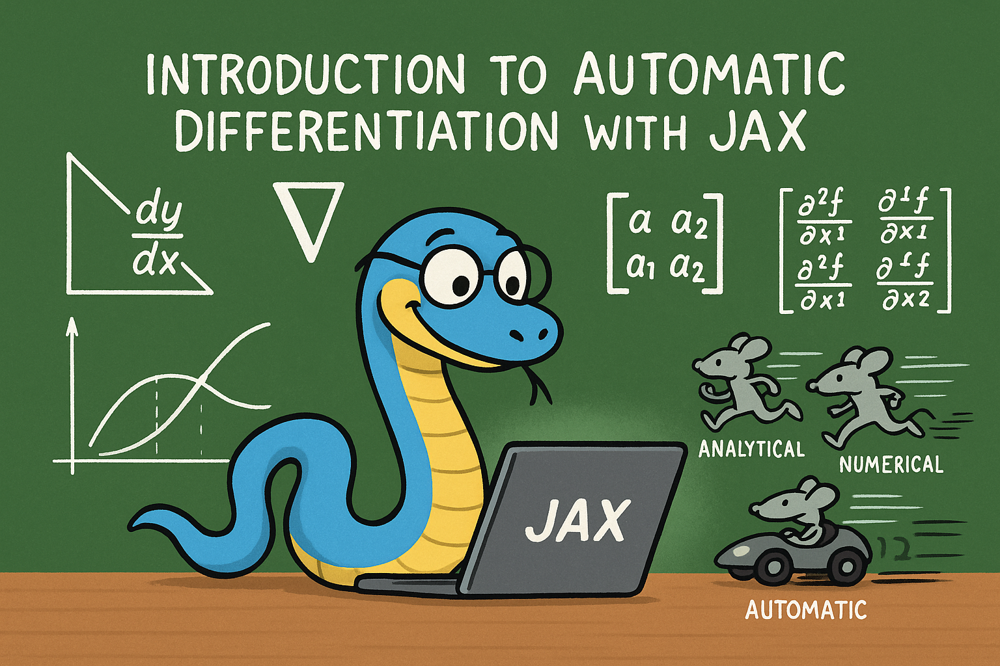

Introduction to automatic differentiation with jax#
{kind=link}
Derivatives in scientific programming#
Derivatives play an important role in modeling engineering processes. They serve mathematical roles in optimization where we need them to find stationary points (i.e. where the first derivatives are zero), and to determine if these points are minima, maxima or saddle points.
Derivatives also play a central role in uncertainty propagation and sensitivity analysis. These analyses require derivatives of equations with respect to parameters.
Derivatives also serve in physical roles. When we write mass/energy balances we are defining how those variables change in time, which is a derivative. If you recall Fick’s law, we way that the flux of a material is proportional to the gradient in concentration, which is a derivative. In thermodynamics, we relate many properties to derivatives of some thermodynamic variable. For example, the heat capacity is defined by a partial derivative of the enthalpy: \(\left(\frac{\partial H}{\partial T}\right)_P = C_p\). There are many more examples where derivatives are important.
We usually think about deriving derivatives using calculus. That requires, however, that you have an analytical equation, that you know how to derive the derivative, and finally that you correctly evaluate the result. When you have an analytical equation, that approach is probably the best one when done correctly.
In many cases, however, we may not have an equation, or the equation could change regularly or be tedious to derive the derivative. As we increasingly express equations in the form of a program, it is increasingly inconvenient and difficult to work through the program to derive derivatives. In these cases, we need a computational approach to getting derivatives.
We have primarily considered two approaches to estimating or approximating derivatives so far:
numpy.gradientnumdifftools.Derivative
Both of these approaches have limitations we review below.
numpy.gradient#
numpy.gradient uses
finite
difference formulas to estimate the derivatives from data. This data
may be obtained from experiments, or by numeric integration of an ODE,
or from the solution to a BVP. In these cases we do not have analytical
formulas to get derivatives from, and we have to resort to numerical
methods.
import matplotlib.pyplot as plt
import numpy as np
?np.gradient
The accuracy of these derivatives depends on the spacing between the data points. We have seen the derivatives at the edges of the data are less accurate because a first-order equation is used by default.
x = np.linspace(0.1, 1, 10)
y = x**0.5
plt.plot(x, 0.5 * x**-0.5, x, np.gradient(y, x, edge_order=2), "r.")
plt.legend(["analytical", "numeric"]);
You may recall we can fit a polynomial to this data, and then easily get the derivative of the polynomial. By increasing the polynomial order we can improve the derivative estimates to a point. If you start overfitting, you will introduce wiggles into the data.
p = np.polyfit(x, y, 9)
dp = np.polyder(p)
plt.plot(x, 0.5 * x**-0.5, x, np.polyval(dp, x), "r.")
plt.legend(["analytical", "numeric"]);
Let’s briefly review some linear algebra and the connection with derivatives.
A central difference formula is:
\(y'(x_i) \approx \frac{y_{i+1} - y_{i-1}}{2h}\)
We cannot evaluate this for \(y_0\) or \(y_{-1}\). We need a simpler formula for that:
We use a forward formula at the beginning: \(y'(x_0) \approx \frac{y_1 - y_0}{h}\)
and a backward formula at the end: \(y'(x_{-1}) \approx \frac{y_{-1} - y_{-2}}{h}\)
We can express these formulas in matrix algebra form:
\(\mathbf{y'} = \mathbf{D} \mathbf{y}\)
x, h = np.linspace(0.1, 1, 10, retstep=True)
print(h)
y = x**0.5
D = np.zeros((len(x), len(x)))
D += np.diag(np.ones(len(x) - 1) / (2 * h), 1) # diagonal above main
D += np.diag(-np.ones(len(x) - 1) / (2 * h), -1) # diagonal below the main
D[0, 0:3] = np.array([1, -2, 2]) / h**2 # forward formula for the first row
D[-1, -3:] = np.array([1, -2, 1]) / h**2 # backward formula for the last row
D
0.1
array([[ 100., -200., 200., 0., 0., 0., 0., 0., 0.,
0.],
[ -5., 0., 5., 0., 0., 0., 0., 0., 0.,
0.],
[ 0., -5., 0., 5., 0., 0., 0., 0., 0.,
0.],
[ 0., 0., -5., 0., 5., 0., 0., 0., 0.,
0.],
[ 0., 0., 0., -5., 0., 5., 0., 0., 0.,
0.],
[ 0., 0., 0., 0., -5., 0., 5., 0., 0.,
0.],
[ 0., 0., 0., 0., 0., -5., 0., 5., 0.,
0.],
[ 0., 0., 0., 0., 0., 0., -5., 0., 5.,
0.],
[ 0., 0., 0., 0., 0., 0., 0., -5., 0.,
5.],
[ 0., 0., 0., 0., 0., 0., 0., 100., -200.,
100.]])
dydx = D @ y
np.allclose(dydx, np.gradient(y, x, edge_order=2))
False
There are more accurate formulas to use for these that use more data
points, but in these cases it is better to use np.gradient because it
already handles these.
numdifftools.Derivative#
When we have equations in the form of functions rather than data, we
can leverage scipy.misc.derivative. This function also works by using
finite differences, and so it would suffer from the same limitations on
accuracy as we saw above with data. Nevertheless, if you don’t have a
better approach, it might still be useful.
import numpy as np
from numdifftools import Derivative
?Derivative
The most crucial step is choosing an appropriate value for dx. Note that
derivative does not return a function; we have to wrap it in a
function definition to use it like a function.
def f(x):
return x**0.5
def dfdx(x, dx=None):
return Derivative(f, step=dx)(x)
plt.plot(x, 0.5 * x**-0.5, x, dfdx(x), "r.")
plt.legend(["analytical", "numeric"]);
Derivative(f)(x) # this is vectorized, so the helper function is not critical here
array([1.58113883, 1.11803399, 0.91287093, 0.79056942, 0.70710678,
0.64549722, 0.5976143 , 0.55901699, 0.52704628, 0.5 ])
We can combine the ideas for data and functions with
scipy.interpolate.interp1d. This is similar in spirit to using
polyfit, but the polynomials are locally fit rather than globally fit
through all the data points. As with polyfit, this can result in
spurious wiggles being introduced, especially near data points where
there are big changes.
from scipy.interpolate import interp1d
?interp1d
x, h = np.linspace(0.1, 1, 10, retstep=True)
y = x**0.5 + np.random.normal(0, 0.005, size=x.shape)
af = interp1d(x, y, kind="cubic", bounds_error=False, fill_value="extrapolate")
af([0.4, 0.5]), af(3)
(array([0.63419876, 0.71511544]), array(89.92641567))
xfit = np.linspace(0.1, 1, 100)
plt.plot(x, y, "bo", xfit, af(xfit));
def dfadx(x, dx=None):
return Derivative(af, step=dx)(x)
plt.plot(x, 0.5 * x**-0.5, "bo", xfit, dfadx(xfit, dx=0.05), "r.")
plt.legend(["analytical", "numeric"]);
plt.plot(x, 0.5 * x**-0.5, x, np.gradient(y, x), "r.");
Limitations of numeric derivatives#
There are several limitations of numeric derivatives. The biggest one is that they are all approximations to the real derivative, and their accuracy depends on how small the spacing between the data points is. If the spacing is too small, however, these methods can suffer from numerical instabilities. These issues are exacerbated with higher order derivatives; derivatives tend to magnify errors in data.
Fitting models to the data leads to analytical models that can be analytically differentiated. Here you have to be aware of the properties of the model, and its derivatives.
The methods above apply to scalar functions of a single variable. It is not convenient to use them for multivariable functions.
Numdifftools (https://numdifftools.readthedocs.io/en/latest/) is a more advanced library for numerical differentiation that can do multivariable functions, but it too can have numerical instabilities and needs to be checked for convergence.
Symbolic differentiation#
https://docs.sympy.org/latest/tutorial/calculus.html
Computer algebra systems have increasingly been able to compute symbolic derivatives of expressions. sympy can do some calculus, including taking derivatives symbolically.
from sympy import * # the import * is considered lazy/sloppy,
# and it can cause issues if you import functions that are already defined
x = symbols("x")
df = diff(x**0.5, x)
print(df)
print(df.subs(x, 0.5))
X = np.linspace(0.1, 2)
plt.plot(X, 0.5 * X**-0.5, "r-", X, [df.subs(x, a) for a in X], "b.")
plt.legend(["analytical", "symbolic"]);
0.5/x**0.5
0.707106781186548
import sympy as sym # This is a more responsible way to keep functions in namespaces
x = sym.symbols("x")
df = sym.diff(x**0.5, x)
print(df)
print(df.subs(x, 0.5))
X = np.linspace(0.1, 2)
plt.plot(X, 0.5 * X**-0.5, "r-", X, [df.subs(x, a) for a in X], "b.")
plt.legend(["analytical", "symbolic"]);
0.5/x**0.5
0.707106781186548
For some applications, this is very useful. Symbolic derivatives do not work on programs though, and in some cases there are not simple derivatives to find.
Automatic differentiation#
The third kind of computational derivatives we need to know about is called automatic differentiation (AD). It is completely different from both finite differences and symbolic differentiation. In AD, we use the chain rule to take derivatives of computer programs.
AD solves many of the problems described above:
It is not an approximation like the finite difference approach.
It works on programs, unlike symbolic differentiation
However, these features come at some cost; we have to use an AD library and learn how to write code with it. Most importantly, AD is usually an add-on feature and its implementation introduces some constraints on what can be programmed.
There are several AD frameworks available in Python that have been developed for machine learning applications. The main ones in use today are:
autograd - HIPS/autograd (old, but good)
JAX - google/jax (better version of autograd)
Tensorflow - https://www.tensorflow.org/
pytorch - https://pytorch.org/
We will focus on jax for the rest of the semester.
jax works by modifying numpy so that derivatives can be
automatically computed.
The most important step in using jax is to import the jax version of numpy. Not doing this will lead to errors eventually. We also configure jax to use 64-bit floats (32-bit is the default, and that is not usually sufficient for pycse calculations.)
from jax import config
config.update("jax_enable_x64", True)
import jax.numpy as np
Derivatives of scalar functions#
jax provides functions for getting the derivatives of different kinds of functions. We first consider scalar functions, i.e. functions that return one number that is continuous (e.g. it is a float). The function can have many arguments, but it can only return one number. Note you have to be careful here, some functions return a single number with single arguments, but return an array of numbers if you use arrays as arguments.
from jax import grad
?grad
You use grad when your function outputs a single number, and you want a single derivative of that function with respect to an argument. For example, it could be an objective function.
def f(x):
return x**2
dfdx = grad(f) # the output is callable like a function
dfdx(10.0) # the analytical derivative is 2x
Array(20., dtype=float64, weak_type=True)
There are a few points to note in the output. First you get the WARNING, which is annoying, but something to ignore. You only see it the first time you run the code, if you run it again you won’t see it.
Second, the output shows we do not get a “number” that is returned, but a DeviceArray object. If you print the object, you will see something that looks like a number.
Note: Using integers as the input will give an error. Why? Integers are not differentiable.
dfdx(10)
---------------------------------------------------------------------------
TypeError Traceback (most recent call last)
Cell In[19], line 1
----> 1 dfdx(10)
[... skipping hidden 4 frame]
File /opt/hostedtoolcache/Python/3.12.12/x64/lib/python3.12/site-packages/jax/_src/api.py:539, in _check_input_dtype_revderiv(name, holomorphic, allow_int, x)
535 if (dtypes.issubdtype(aval.dtype, dtypes.extended) or
536 dtypes.issubdtype(aval.dtype, np.integer) or
537 dtypes.issubdtype(aval.dtype, np.bool_)):
538 if not allow_int:
--> 539 raise TypeError(f"{name} requires real- or complex-valued inputs (input dtype "
540 f"that is a sub-dtype of np.inexact), but got {aval.dtype.name}. "
541 "If you want to use Boolean- or integer-valued inputs, use vjp "
542 "or set allow_int to True.")
543 elif not dtypes.issubdtype(aval.dtype, np.inexact):
544 raise TypeError(f"{name} requires numerical-valued inputs (input dtype that is a "
545 f"sub-dtype of np.bool_ or np.number), but got {aval.dtype.name}.")
TypeError: grad requires real- or complex-valued inputs (input dtype that is a sub-dtype of np.inexact), but got int64. If you want to use Boolean- or integer-valued inputs, use vjp or set allow_int to True.
We have to be careful about what kind of argument we use. You should not use lists when you mean arrays. jax can only work on arrays defined in the jax.numpy library.
With jax you should be explicit on types, and not rely on automatic casting.
dfdx([1.5, 2.0]) # This is an error because lists do not support the operations required to evaluate the derivative.
---------------------------------------------------------------------------
TypeError Traceback (most recent call last)
Cell In[20], line 1
----> 1 dfdx([1.5, 2.0]) # This is an error because lists do not support the operations required to evaluate the derivative.
[... skipping hidden 12 frame]
Cell In[18], line 2, in f(x)
1 def f(x):
----> 2 return x**2
TypeError: unsupported operand type(s) for ** or pow(): 'list' and 'int'
Here is another error, because when you pass an array, the function no longer has a scalar output.
dfdx(np.array([1.5, 2.0]))
---------------------------------------------------------------------------
TypeError Traceback (most recent call last)
Cell In[21], line 1
----> 1 dfdx(np.array([1.5, 2.0]))
[... skipping hidden 4 frame]
File /opt/hostedtoolcache/Python/3.12.12/x64/lib/python3.12/site-packages/jax/_src/api.py:523, in _check_scalar(x)
521 if isinstance(aval, ShapedArray):
522 if aval.shape != ():
--> 523 raise TypeError(msg(f"had shape: {aval.shape}"))
524 else:
525 raise TypeError(msg(f"had abstract value {aval}"))
TypeError: Gradient only defined for scalar-output functions. Output had shape: (2,).
The problem is with an array input, f is not a scalar function; it
outputs an array.
f(np.array([1.5, 2.0]))
Array([2.25, 4. ], dtype=float64)
To address this, we can use vmap, which means pretend each element is passed one at a time, and then provide the gradient for that value. vmap means vector map, which is a programming jargon for mapping something on every element.
from jax import vmap
?vmap
You use vmap when you might use an array as input, and you get an array of values out, but you want the derivative of each element in the output with respect to the corresponding element in the input. This is still a scalar function in the sense that each element in the input produces one element in the output.
eg = vmap(dfdx)
eg(np.array([1.5, 2.0, -2.0, 5.0]))
Array([ 3., 4., -4., 10.], dtype=float64)
[dfdx(_x) for _x in [1.5, 2.0, -2.0, 5.0]] # equivalent to vmap, but probably slower
[Array(3., dtype=float64, weak_type=True),
Array(4., dtype=float64, weak_type=True),
Array(-4., dtype=float64, weak_type=True),
Array(10., dtype=float64, weak_type=True)]
Here is an example usage similar to the examples we have used so far.
def f(x):
return x**0.5
df = vmap(grad(f)) # This returns a callable function
x = np.linspace(0.1, 2)
import matplotlib.pyplot as plt
plt.plot(x, 0.5 * x**-0.5, "r-", x, df(x), "b.")
plt.legend(["analytical", "autograd"])
np.allclose(0.5 * x**-0.5, df(x))
Array(True, dtype=bool)
AD is not magical, if a derivative is not defined, AD will not compute it. Here the derivative at x=0 is infinity, which is what jax reports.
df(np.array([0.0]))
Array([inf], dtype=float64)
The AD derivatives are identical within tolerance to the analytical formula because autograd simply applies the chain rule to the program to evaluate the derivatives.
Limitation Derivatives with integers is not well-defined since integers are not continuous.
It might not seem like a big deal that this works. The significance really shows when you have more complex programs. This Rube-Goldberg program is equivalent to the previous program. You could work out the derivative by the chain rule your self, but autograd has no problem doing this through all the operations and loops!
def f(x):
a = 2.0 * x
b = a**2
c = b / 4.0
d = c**0.5
for i in range(5):
d = d * 2
for i in range(5):
d = d / 2
e = np.sqrt(d)
return e
df = vmap(grad(f)) # This returns a callable function
x = np.linspace(0.1, 2)
plt.plot(x, 0.5 * x**-0.5, "r-", x, df(x), "b.")
plt.legend(["analytical", "autograd"])
np.allclose(0.5 * x**-0.5, df(x))
Array(True, dtype=bool)
Of course, autograd cannot make derivatives where they are not defined.
The derivative of the square root function is not defined at \(x=0\), and
we get warnings and a nan result if we try to evaluate it there.
df(np.array([0.0]))
Array([nan], dtype=float64)
Derivatives of multivalue functions - Jacobian#
Autograd really starts to shine when we have vector functions. If we have a function that takes an input with \(n\) and produces \(m\) outputs, then we frequently need to compute the derivatives of the output with respect to the inputs. These are defined by:
\(\mathbf{J}_{ij} = \frac{\partial f_i}{\partial x_j}\)
jax provides functions for computing the Jacobian for this. Let’s consider an example:
\(f_1(x, y) = x^2 y\)
\(f_2(x, y) = 5 x + \sin(y)\)
The Jacobian of this system is:
There are two Jacobian functions, jacfwd and jacref. In theory they do the same thing, but one of them will usually be faster for some systems. jacfwd uses a forward pass through the code to compute the Jacobian, while jacrev uses a reverse pass. The documentation recommends using jacfwd for “tall” Jacobians and jacref for “wide” jacobians. For square jacobians, it does not matter. It is fine to be practical, and try both to see if one is faster than other.
from jax import jacfwd
def f(X):
x, y = X
return np.array([x**2 * y, 5 * x + np.sin(y)]) # f1 # f2
Jf = jacfwd(f)
# now show the equivalence
x, y = 0.5, 0.5
print("Jf: ", Jf(np.array([x, y]))) # use array for the input
print("An: ", np.array([[2 * x * y, x**2], [5, np.cos(y)]]))
np.allclose(Jf(np.array([x, y])), np.array([[2 * x * y, x**2], [5, np.cos(y)]]))
Jf: [[0.5 0.25 ]
[5. 0.87758256]]
An: [[0.5 0.25 ]
[5. 0.87758256]]
Array(True, dtype=bool)
Limitation Note the explicit use of arrays in the above code. jax requires you to use arrays explicitly most of the time, and you can get errors if you are lazy and use lists/tuples.
We use Jacobians in a variety of applications, but one important one is for changing variables in integrations, presumably because this results in a simpler integral.
\(\int \int_R f(x, y) dx dy = \int \int_{R'} f(x(u, v), y(u, v)) \left|\frac{\partial(x, y)}{\partial(u, v)}\right| du dv\)
Where \(\left|\frac{\partial(x, y)}{\partial(u, v)}\right|\) is defined as the determinant of the Jacobian:
\(\left|\begin{array}{cc} \frac{\partial x}{\partial u} & \frac{\partial x}{\partial v} \\ \frac{\partial y}{\partial u} & \frac{\partial y}{\partial v} \end{array}\right|\)
Here is an example we work out that is adapted from: http://www.stat.rice.edu/~dobelman/notes_papers/math/Jacobian.pdf

Executing that double integral in cartesian coordinates is not convenient because the integral limits would be a function for \(y\). If we instead switch to polar coordinates, then we have the simpler limits of \(\rho\) from 0 to \(r\), and \(\theta\) from 0 to \(2\pi\). There is no \(f(x, y)\) here, the integrand is just 1.
This is a double integral, and we use scipy.integrate.dblquad.
from scipy.integrate import dblquad
?dblquad
Return the double (definite) integral of ``func(y, x)`` from ``x = a..b`` and ``y = gfun(x)..hfun(x)``.
We want:
\(\int_{\rho=0}^{\rho=1} \int_{\theta=0}^{\theta=2\pi} det(J) d\rho d\theta = \pi\)
That leads to this implementation:
def f(P):
rho, theta = P
return np.array([rho * np.cos(theta), rho * np.sin(theta)]) # x # y
jf = jacfwd(f)
def integrand(rho, theta):
J = jf(np.array([rho, theta]))
return np.linalg.det(J)
# integrand(y, x)
xa, xb = 0, 2 * np.pi # theta
ya, yb = 0, 1 # rho
dblquad(integrand, xa, xb, ya, yb)
(3.141592653589793, 3.487868498008632e-14)
And the expected answer. Compare that to the cartesian coordinate system:
\(\int_{-1}^1 \int_{-\sqrt{1 - x^2}}^{\sqrt{1 - x^2}} dx dy\)
def integrand(y, x):
return 1
def yl(x):
return -np.sqrt(1 - x**2)
def yu(x):
return np.sqrt(1 - x**2)
dblquad(integrand, -1, 1, yl, yu)
(3.1415926535897967, 2.000470900043183e-09)
The answer is the same, but the integral limits are more complex. Of course, one can invoke Kitchin’s conservation of complexity law here; we can give up the complexity of the limits if we take on the complexity of autograd.
Hessians#
The Hessian matrix is a square matrix of second-order partial derivatives of a scalar-valued function.
\(\mathbf{H}_{ij} = \frac{\partial^2 f}{\partial x_i x_j}\)
jax.hessian also returns a callable function.
from jax import hessian
def f(X):
x, y = X
return x**2 + y**2
H = hessian(f)
H(np.array([0.5, 0.5]))
Array([[2., 0.],
[0., 2.]], dtype=float64)
The Hessian is used to classify what kind of stationary points have been found. It is also used in some optimization algorithms.
Applications to optimization#
from scipy.optimize import minimize
?minimize
We will consider the Rosenbrock function, which has a minimum at (1, 1) with a value of 0. The standard optimization approach is shown here for comparison.
from scipy.optimize import minimize
def rosenbrock(X):
x, y = X
return (1 - x) ** 2 + 100 * (y - x**2) ** 2
sol = minimize(rosenbrock, [1, 0])
print(sol)
message: Optimization terminated successfully.
success: True
status: 0
fun: 2.111180088069277e-11
x: [ 1.000e+00 1.000e+00]
nit: 32
jac: [-2.897e-07 2.844e-08]
hess_inv: [[ 4.939e-01 9.877e-01]
[ 9.877e-01 1.980e+00]]
nfev: 111
njev: 37
Next, we look at how to imporve the performance by providing the Jacobian and Hessian via AD functions.
?minimize
The solution is pretty good, but we can get a better answer if we provide the Jacobian. Usually you are expected to derive and implement this. We do it in one like with jax. Since we have a scalar function, the Jacobian and grad are equivalent.
df = grad(rosenbrock)
df(np.array([1.0, 0.0]))
Array([ 400., -200.], dtype=float64)
df = grad(rosenbrock)
sol_j = minimize(rosenbrock, [1, 0], jac=df)
print(sol_j)
message: Optimization terminated successfully.
success: True
status: 0
fun: 1.929228318427838e-14
x: [ 1.000e+00 1.000e+00]
nit: 32
jac: [-2.941e-07 8.157e-09]
hess_inv: [[ 4.929e-01 9.858e-01]
[ 9.858e-01 1.977e+00]]
nfev: 37
njev: 37
Note that the function is closer to zero (although it was small to start with) and it took many fewer steps to get there.
Finally, we get an even better answer if we also provide the Hessian, and use an algorithm that uses the Hessian (most of them do not).
?minimize
hf = hessian(rosenbrock)
minimize(rosenbrock, [1, 0], jac=df, hess=hf, method="dogleg")
message: Optimization terminated successfully.
success: True
status: 0
fun: 4.930380657631324e-30
x: [ 1.000e+00 1.000e+00]
nit: 1
jac: [-8.882e-14 4.441e-14]
nfev: 2
njev: 2
nhev: 1
hess: [[ 8.020e+02 -4.000e+02]
[-4.000e+02 2.000e+02]]
Note we get an almost exact answer, with only two function evaluations!
You can see that the Hessian returned by this solver is identical to the Hessian we would compute.
hf(np.array([1.0, 1.0]))
Array([[ 802., -400.],
[-400., 200.]], dtype=float64)
Note that in the example where we just provided the Jacobian that the Hessian is approximated. You can see that here. It is pretty close, but not exact.
print(np.linalg.inv(sol_j.hess_inv))
[[ 802.02588665 -399.99966532]
[-399.99966532 200.00039681]]
Summary#
Today we reviewed computational approaches to taking derivatives. The star of this lecture is automatic differentiation.
jax is very good, but it is worth spending some time reading https://jax.readthedocs.io/en/latest/notebooks/Common_Gotchas_in_JAX.html. It is not magic, and sometimes there are surprises that require innovative solutions.
Next time we will look at several applications of AD in calculus, science and engineering. After that, we will return to nonlinear regression and conclude with an introduction to machine learning.
from jupyterquiz import display_quiz
display_quiz('.quiz.json')
Pyter’s Derivative Memory Palace#
Pyter Python slithered into his study room, notebook open and glasses shining. “Derivatives,” he muttered, “there are so many ways to find them! I need to keep them straight.”
First, he worked out “dy/dx” by hand, using the chain rule where needed. “Ah yes—analytical differentiation. The classic! Perfect when I have a clean, simple formula. It gives exact answers, as long as I’m careful with the algebra.”
Then he sketched a row of dots on a curve. “That’s numerical differentiation,” he said. “When all I’ve got are data points, I can approximate the slope. But I must remember—numerical methods can be noisy and less accurate, especially near the edges.”
Next, Pyter scribbled curly symbols: ∂, ∇, and matrices. “Symbolic differentiation!” he exclaimed. “Tools like SymPy can do the calculus for me—great when equations are neat. But if I try to hand them a whole program, they’ll choke.”
Finally, Pyter opened his glowing laptop. “And here’s my favorite: automatic differentiation. With JAX, I can feed it programs—loops, functions, everything—and it quietly applies the chain rule everywhere. It’s not an approximation, and it works even when equations get too tangled for me to handle by hand.”
Pyter leaned back, proud. He imagined the four methods as characters in a relay race:
Analytical: precise but sometimes slow with pencil and paper.
Numerical: quick, but stumbles on rough terrain.
Symbolic: elegant, yet picky about what it eats.
Automatic: a speedy racer in a sleek car, handling anything coded in Python.
“Now I’ll never forget,” Pyter said with a smile, “which friend to call for derivatives—depending on the challenge ahead.”